O QUE SÃO LEVIATHANS?
Leviathans (ou leviatã) é uma classificação dada a criaturas extremamente grandes no universo de subnautica. Existem dois tipos: agressivos ou passivos. CONFIRA ABAIXO QUAIS SÃO ELES!
SEA TREADER
O Sea Treader Leviathan é uma fauna defensiva da classe leviatã. Ele pode ser encontrado vagando no Grande Recife, bem como no Caminho do Peregrino do Mar, formando pequenos rebanhos.
Pertencem a classes marinhas de animais muito úteis que quebram pedaços de solo marinho e transformam em xisto.
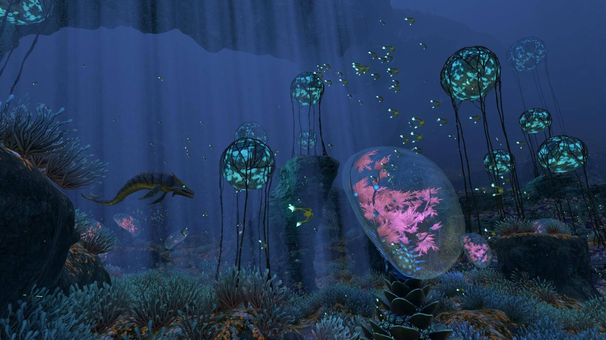
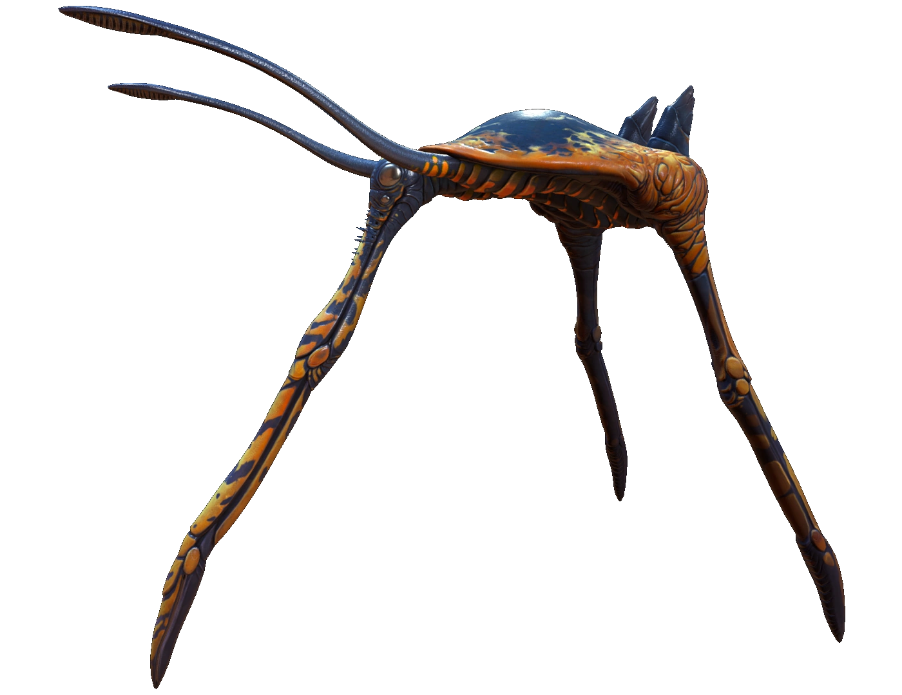
Data Bank Entry
Um vasto leviatã bípede que vaga pelos recifes em manadas, pastando no fundo do mar.
1. Antenas: As antenas na cabeça da criatura podem detectar uma série de aromas, ajudando os pisadores do mar a encontrar pastagens frescas, evitar o caminho de grandes predadores e sentir sinais químicos de outros de sua espécie.
2. Carapaça: Armadura grossa protege a criatura do ataque de todos, exceto o maior dos carnívoros. Duas pernas se estendem pela parte traseira.
3. Focinho alongado: Usado para desviar material vegetal do fundo do mar e manter o equilíbrio.
4. Comportamento: Grandes rebanhos dizimariam a flora de uma única área, favorecendo assim o comportamento migratório do peregrino-do-mar. As famílias mantêm seus filhotes no centro do rebanho, e os pais atacam curiosos em busca de uma refeição fácil.
Avaliação: Rebanhos podem desenterrar depósitos minerais à medida que agitam a areia

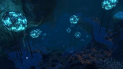
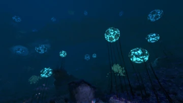
REEFBACK
O Reefback Leviathan é uma espécie de fauna passiva da classe leviatã. É a segunda maior forma de vida passiva e se relaciona com o Sea Dragon Leviathan para a terceira maior criatura geral.Os recifes adultos podem suportar mini-ecossistemas nas costas. Estes ecossistemas incluem muitos tipos de flora e corais, juntamente com outra pequena fauna nadando nas proximidades dos gigantes gentis.
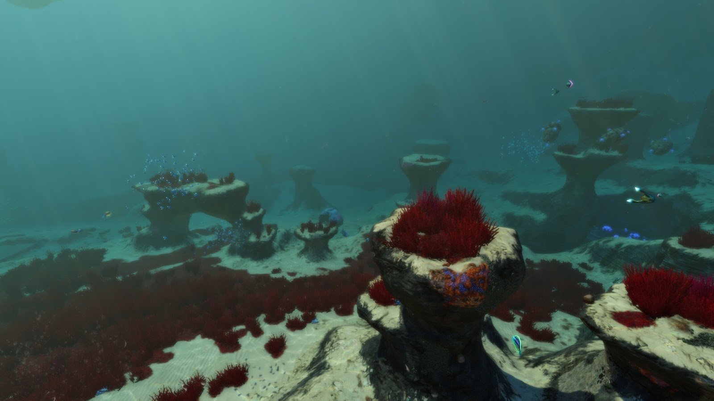
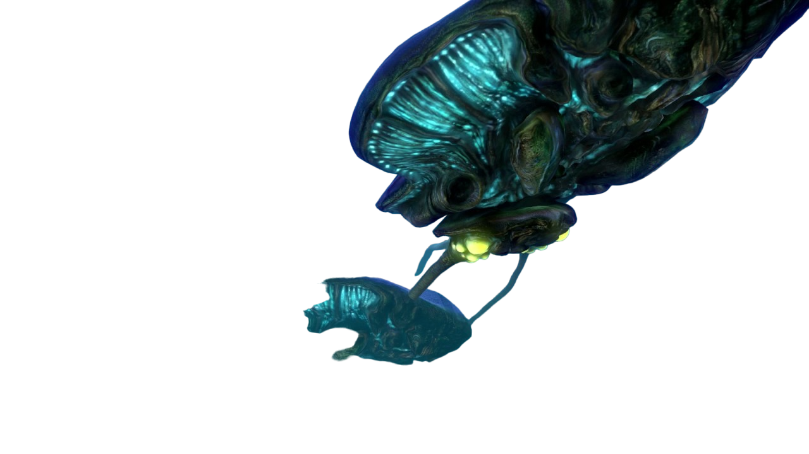
Data Bank Entry
Esta vasta forma de vida tem mais de 30 metros de comprimento e foi designada classe leviatã. Felizmente, alimenta-se exclusivamente de formas de vida semelhantes a plâncton na água.
1. Concha quitinosa: A maior parte da parte superior da forma de vida e parte de sua parte inferior é protegida por um exoesqueleto espesso e em camadas. Isso sugere um caminho evolutivo bastante diferente de outros organismos em 4546B, a maioria dos quais são vertebrados na natureza. A espécie de recife provavelmente foi capaz de crescer muito maior do que outros herbívoros porque qualquer coisa grande o suficiente para romper sua casca há muito tempo foi extinta.
2. Vagens enzimáticas: Semelhantes em aparência às glândulas de algas do gasópode, esses órgãos na parte inferior do recife servem a algum propósito desconhecido em seu sistema digestivo e são capazes de expelir pequenas quantidades de enzimas estomacais para as águas circundantes.
3. Microcosmo local: Uma série de diferentes espécies de cracas e plantas crescem na concha do recife, empurrando suas raízes em cicatrizes antigas na quitina e aproveitando sua mobilidade para evitar a predação. No entanto, os recifes serão frequentemente perseguidos pelos herbívoros mais rápidos e famintos e, portanto, esta espécie de leviatã é um microcosmo móvel digno de anos de estudo em si mesmo.
4. Ciclo de vida: A vida útil dos recifes provavelmente se estende por muitos séculos, caso eles sobrevivam ao seu ciclo de crescimento inicial. Nas primeiras décadas, seu tamanho menor os tornaria vulneráveis a leviatãs carnívoros. Sociável, visto viajando em pequenas cápsulas e se comunicando por um chamado ecoante, o comportamento é consistente com a senciência de baixo nível.
Avaliação: Abriga plantas, pequenos peixes e cracas ricas em metais
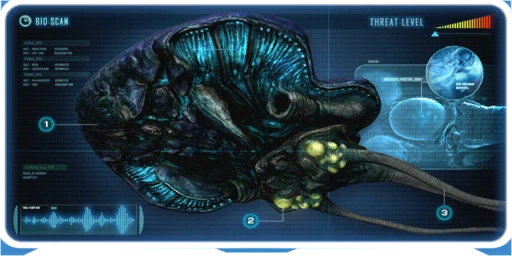
REAPER
O Leviatã Ceifador é uma espécie de fauna agressiva da classe do leviatã geralmente encontrada nadando em grandes áreas abertas, como a Crash Zone, Dunas e Montanhas. É a terceira maior criatura agressiva do jogo e a quinta maior no geral.
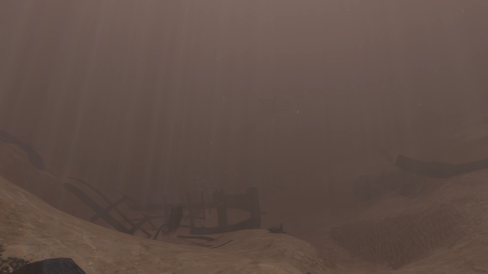
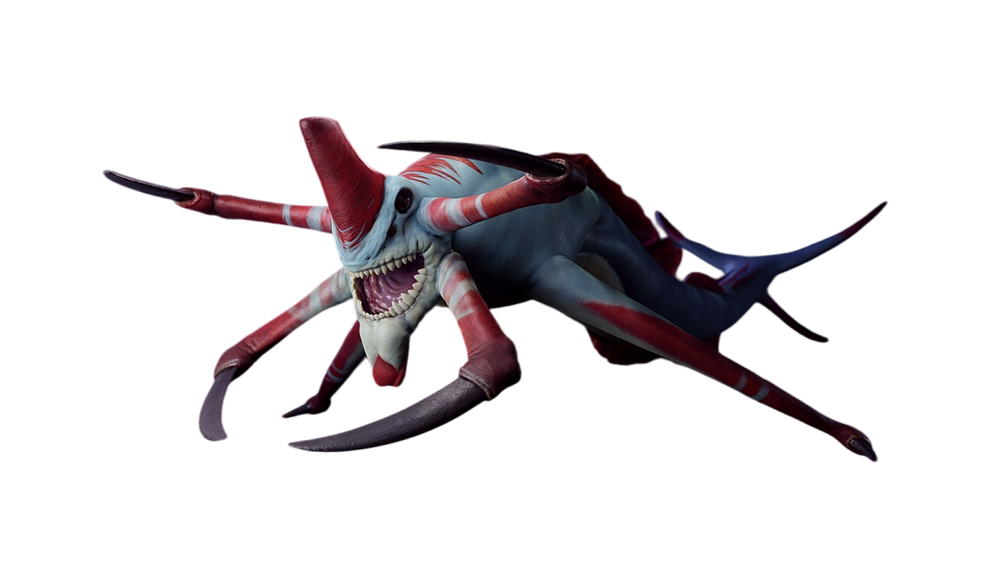
Data Bank Entry
As espécies da classe Leviatã são organismos vastos no topo de suas respectivas cadeias alimentares. Esta espécie é um caçador aerodinâmico, com sentidos altamente desenvolvidos.
1. Mandíbulas poderosas: Este leviatã é capaz de prender a presa no lugar com quatro mandíbulas poderosas e atraí-la ao alcance de suas mandíbulas. A pressão simulada excede a resistência ao esmagamento da mariposa.
2. Ecolocalização: O rugido profundo emitido pelo ceifador em intervalos regulares é efetivamente sonar - se você pode ouvi-lo, o ceifador pode vê-lo.
3. Perfil: O espécime escaneado mediu 55m de comprimento. Observado circulando sua presa e atacando por trás. Esta criatura é quase toda musculosa. Muito pouco cérebro. Sem senso de moralidade. Apenas músculo, sinapses e dentes.
Nota motivacional: Parabéns por chegar perto o suficiente para escanear e viver para ver os resultados!
Avaliação: Ameaça extrema - Evite em todas as circunstâncias
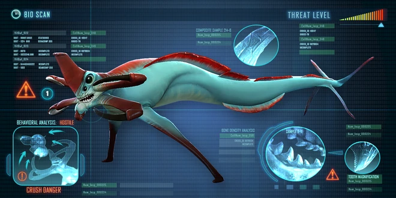
GHOST
O Leviatã Fantasma é uma espécie de fauna da classe Leviatã e forma adulta dos Juvenis do Leviatã Fantasma. É a segunda maior criatura agressiva de Subnautica.
Três adultos do Leviatã Fantasma desovam no mapa (sem contar o número infinito encontrado na Borda da Cratera): dois no Grande Recife e um na Zona de Algas de Sangue do Norte.
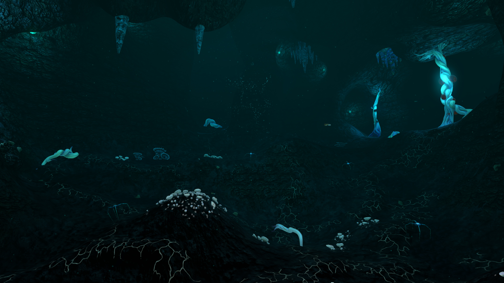
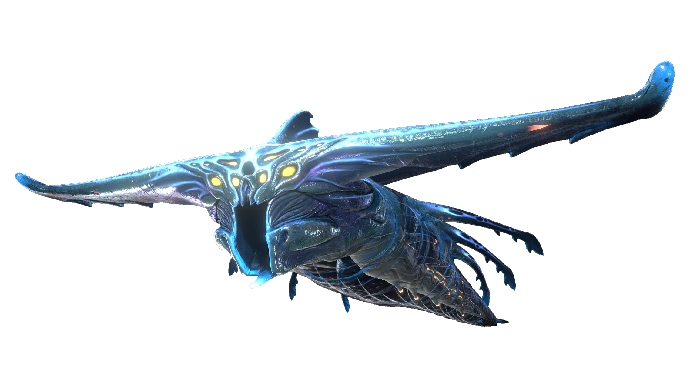
Data Bank Entry
Esta criatura está se aproximando do limite de tamanho para formas de vida orgânicas sustentáveis, e foi designada classe leviatã. Adultos da espécie foram encontrados exclusivamente nas bordas da cratera vulcânica que suporta a vida nesta parte do planeta, e reagem com extrema agressividade ao se aproximar.
1. Cabeça de martelo: extensões cartilaginosas do crânio da criatura formam um martelo que protege o leviatã fantasma enquanto ele executa ataques devastadores de abalroamento.
2. Mandíbulas: Embora totalmente capazes de rasgar a carne de qualquer criatura ao alcance, todas as evidências indicam que leviatãs fantasmas maduros se alimentam de formas de vida microscópicas nas águas ao redor das bordas da zona habitada. Seus ataques cruéis a intrusos em seu domínio não são de natureza predatória, mas territoriais. Uma criatura tão vasta requer uma enorme extensão de água para satisfazer suas necessidades calóricas diárias.
3. Torso: Seu corpo interior musculoso é cercado por uma membrana externa translúcida, sugerindo adaptação para ambientes profundos e com pouca luz. Quando ameaçado, ele pode tensionar todo o seu corpo antes de atacar com incrível velocidade.
4. Ciclo de vida: Provável comportamento migratório. Este espécime provavelmente nasceu longe da área onde foi encontrado.
Avaliação: Ameaça extrema - Evite a borda da cratera
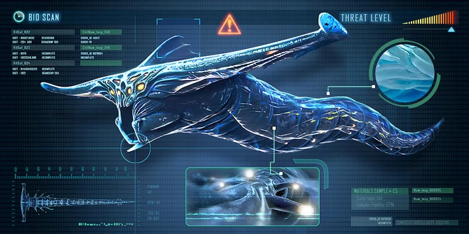
SEA DRAGON
O Leviatã do Dragão do Mar é uma espécie colossal da fauna da classe do leviatã. É a maior criatura agressiva de Subnautica. Há um total de três Leviatãs Dragão do Mar no mapa: dois na Zona de Lava Inativa e um nos Lagos de Lava.
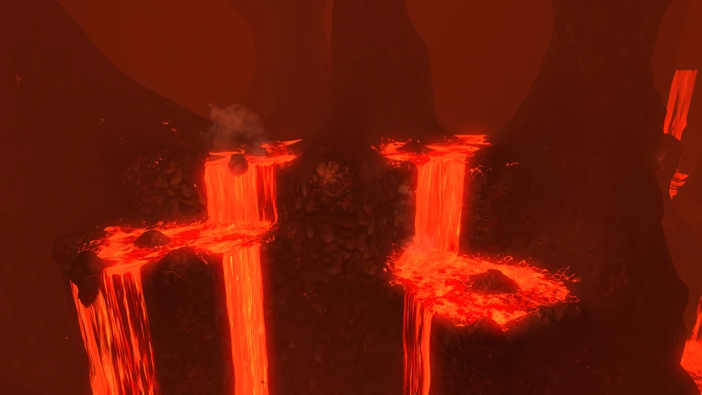
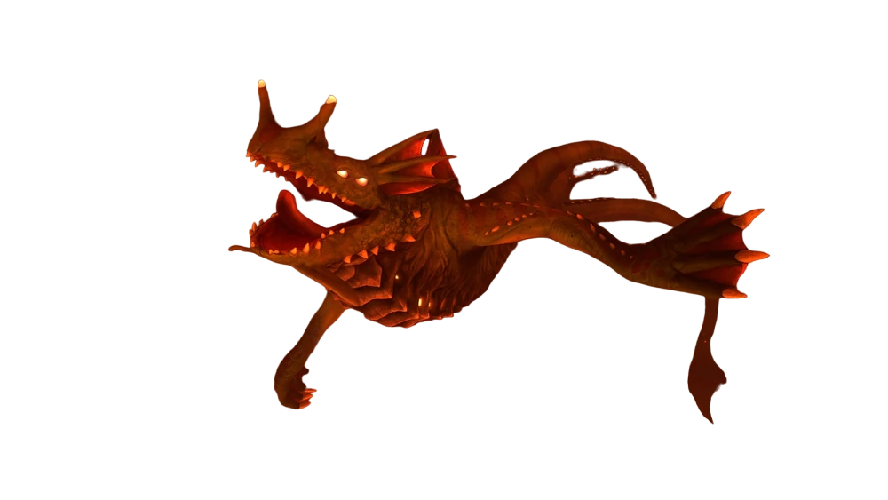
Data Bank Entry
Um leviatã colossal com características reptilianas, visto perseguindo o coração da cratera vulcânica que sustenta a vida nesta área. O espécime escaneado media 112m de comprimento.
1. Tecido à prova de calor: A análise do tecido revela que este espécime consiste em 1/3 de materiais inanimados, focados em torno da área do tórax. O consumo e a retenção de substâncias minerais podem explicar a capacidade da forma de vida de suportar temperaturas extremas. Parece até ser capaz de consumir materiais fundidos e expulsá-los de seus adversários.
2. Antebraços: Antebraços evolutivamente distintos são usados para fins de propulsão e ataque. A descoberta sugere divergência evolutiva de outras espécies do planeta há dezenas de milhões de anos. O dragão-do-mar é provavelmente uma das espécies mais antigas do planeta.
3. Comportamento: Como a maior espécie carnívora encontrada em 4546B, quase tudo é presa em potencial. Com poucos alvos substanciais nos sistemas de cavernas vulcânicas, o dragão marinho provavelmente se aventura em águas mais frias para caçar outros leviatãs menores, encurralando-os e forçando-os mais fundo, onde são fervidos vivos.
O tamanho dos dragões-marinhos e as restrições dos sistemas de cavernas que habitam sugerem que seus números populacionais são extremamente baixos, talvez na casa de um dígito. Embora não seja incomum que predadores maiores sustentem populações mais baixas, é possível que as fontes de alimento do dragão-marinho tenham diminuído ao longo do tempo. Esta espécie pode estar em vias de extinção.
Avaliação: Ameaça extrema - Evite em todas as circunstâncias.
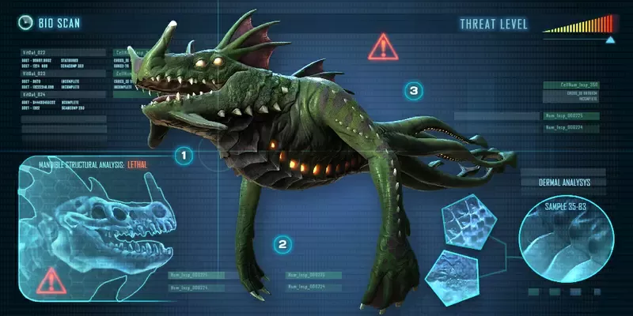
SEA EMPEROR
O Leviatã Imperador do Mar é a maior fauna viva da classe Leviatã encontrada dentro da cratera em Subnautica. É sapiente e telepático, mas ao contrário da maioria dos Leviatãs, não é agressivo.
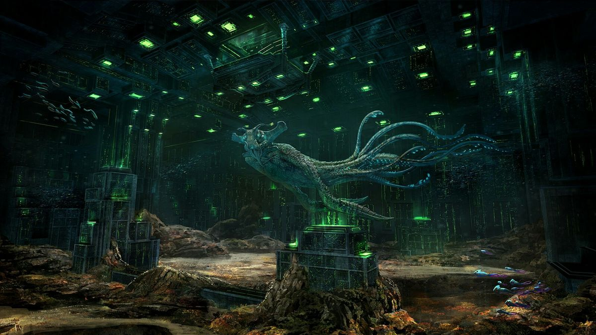
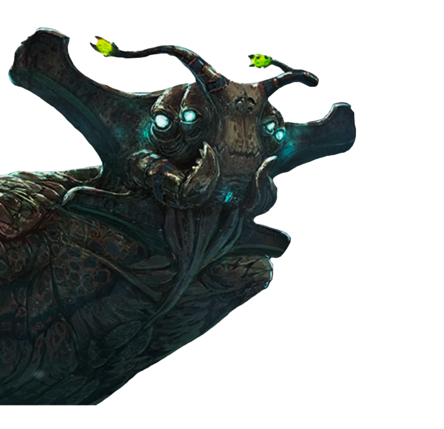
Data Bank Entry
AS CATEGORIAS DE TAMANHO DOS ESPÉCIMES FORAM AJUSTADAS PARA CIMA PARA ACOMODAR ESTA ESPÉCIE
1. Alimentação e digestão: Dados de pesquisas indicam que, apesar de seu tamanho, essa espécie se alimenta inteiramente de microrganismos que filtra da água, que dependem de um ecossistema complicado de vida vegetal e animal.
2. Reprodução: Grandes órgãos semelhantes a ovários são carregados na seção central da criatura, sugerindo que, como outras espécies neste planeta, ela produz ovos, no entanto, o tecido cicatricial interno indica provável infertilidade.
3. Enzima 42O imperador fabrica a enzima 42 dentro de sua cavidade estomacal para quebrar seus alimentos, e ocasionalmente os expele para as águas circundantes. Descobriu-se que essa substância neutraliza os efeitos da bactéria, e sua presença no ecossistema hoje explicaria como a vida no planeta sobreviveu ao surto. Resta explicar por qual mecanismo a enzima está sendo entregue.
4. Saúde: A análise comparativa de tamanho e taxas metabólicas indica que o espécime capturado pelos pesquisadores tinha aproximadamente 1.600 anos. Extenso tecido cicatricial interno e externo sugere que ele tenha vivido bem além do pico de vida de sua espécie.
Avaliação: Embora um espécime de imperador saudável possa ter tido algum potencial como cura, é improvável que algum sujeito de pesquisa tenha sobrevivido aos procedimentos de quarentena.